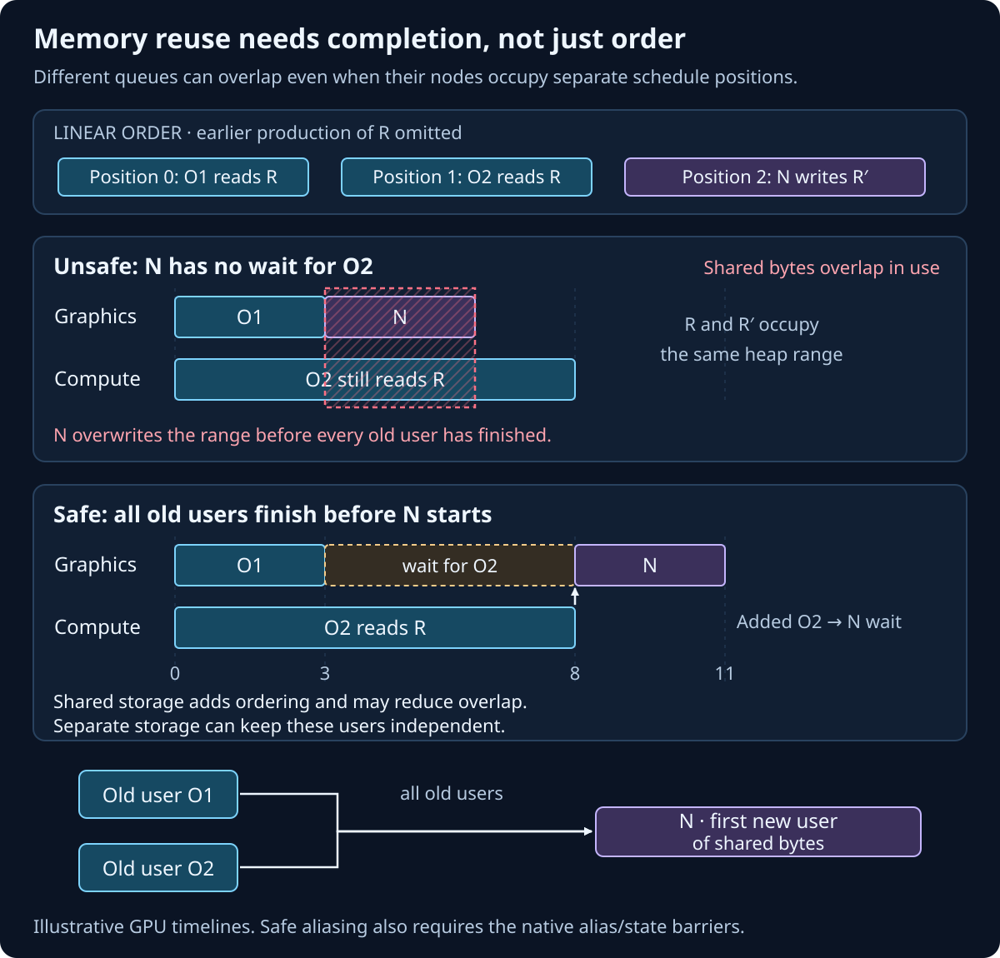
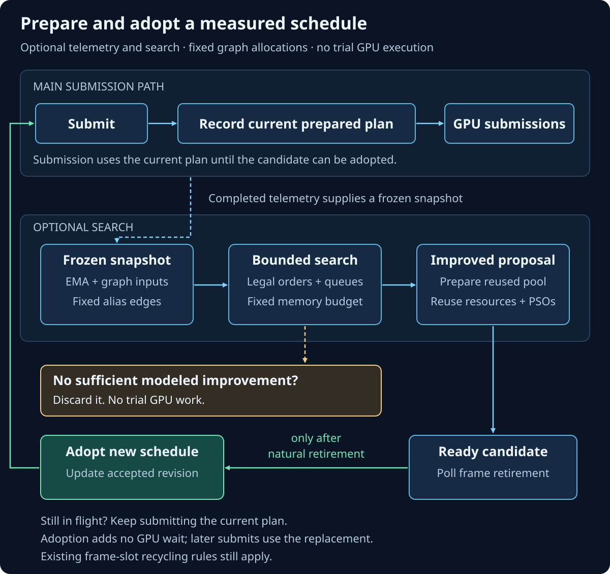
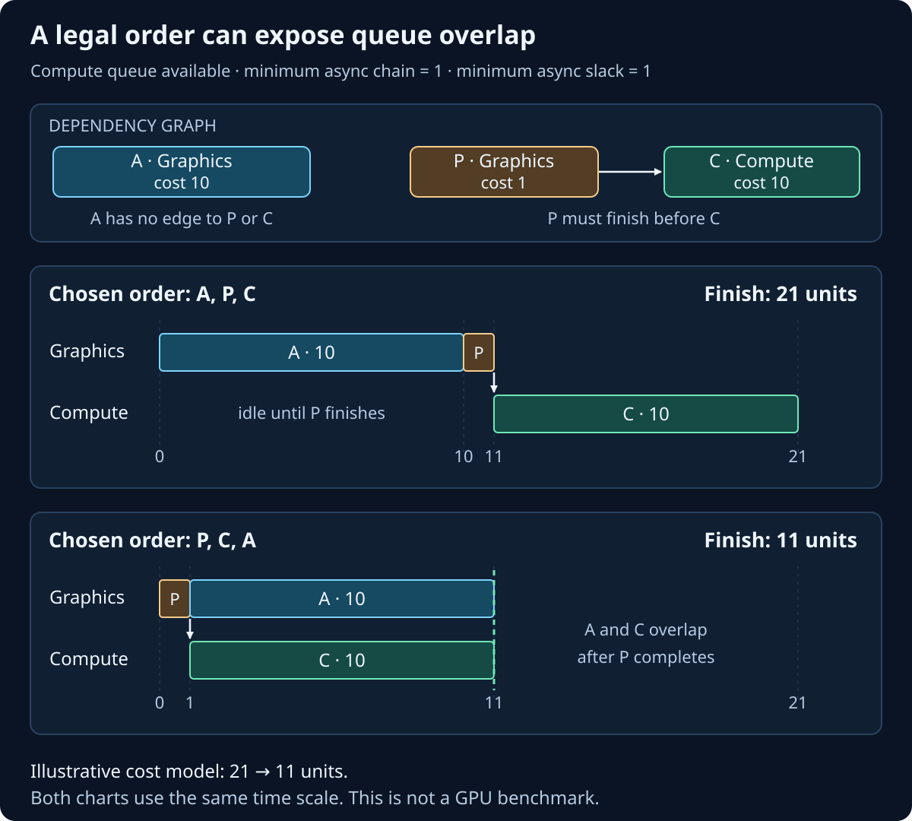

How ArdaInductor compiles and schedules a graph
Follow dependencies through queue assignment, memory reuse, and optional schedule adaptation across frames.
Prerequisites and the scheduling model
After this chapter you should be able to predict which nodes remain live, explain every search algorithm in the compiler, calculate a candidate's modeled cost, and explain why an allocation or queue assignment is legal. Start with graph architecture, resource versions and directed acyclic graphs.
A dependency edge u → v requires completion of the relevant work at u before v uses its result. A topological order puts every producer before its consumers. Several orders can satisfy the same graph. A ready node has no unscheduled predecessors; choosing among ready nodes is where a list scheduler makes decisions.
ArdaInductor chooses a linear order, assigns each operation to a logical GPU queue, and plans storage and synchronization. The linear order guides submission; it does not require every GPU operation to execute serially. Different queues may overlap where dependencies and physical resource ownership permit. A queue's own operations execute in order. The makespan is the finish time of the final operation across all queues.
FArdaInductor compiles this graph structure and its execution plan. Registered node implementations supply their shaders, kernels, external CUDA calls and recording callbacks. Compilation can group CUDA nodes into one sequence and reuse a CUDA executable graph; kernel or library internals remain the node implementation's responsibility.
What happens at an edit boundary
FArdaGraphEdit Edit(Graph) opens a construction transaction and saves a rollback snapshot. Edit.Commit() closes and hashes the edit into an ordered queue. CompileAndWait() combines edit hashes and selects a cached persistent revision or invokes compilation; success clears the queue and locks edits until execution is attempted. The next ordinary edit after execution starts an empty construction. The bounded cache retains previous variants and their prepared runtime. A failed compile retains queued work for a correction edit or DiscardPendingEdits(). The accepted program persists across calls to SubmitAndWait() or ExecuteAndWait().
The default rule program follows these steps. The configured rule instances can instead retain every node, choose a stable or custom order, or change queue policy.
- Expand nested subgraph content, then assemble typed graphics and ray-tracing stages. Validate stage order and inputs, and reject incomplete graphics chains before culling. A graphics chain must end at a pixel operation or successful explicit
FetchBuffermaterialization. - Rebuild semantic resource edges and restore explicit dependencies; validate handles, access ranges, producers and acyclicity.
- Trace observable outputs backward to find live nodes. Validate the live pipeline requests and derive native resource requirements without allocating candidate pools.
- Generate two greedy orders. Depending on search mode, improve the incumbent and enumerate more legal orders.
- For each order, derive resource lifetimes, try the applicable allocation policies, add required alias dependencies, assign queues and CUDA batches, and calculate cost. Reject plans exceeding the resource budget.
- Publish the accepted schedule and pending logical allocation plan as the new revision. No graph-owned native buffer or texture is created by this step.
Queue assignment and memory planning are coupled: a memory dependency can remove the independence that justified async compute. Candidate evaluation accounts for this by assigning queues after memory dependencies are known. The first SubmitAndWait() materializes the accepted plan: allocate resource pools, resolve PSOs and framebuffers, prepare per-frame bindings and lower commands. Later frames reuse this execution state. A materialization failure returns a submission error, publishes no frame and retains the pending plan for retry. See compiler orchestration and runtime preparation.

A graph is the output of preprocessing; a plan is the output of compilation
Separating these outputs lets an application save optimized structure without saving device execution state. FArdaPreprocessor copies a closed graph, runs its preprocessing rules and returns a normal FArdaDependencyGraph. Expansion, stage connections, dependency edges and culling annotations belong to this graph. The source is unchanged. The returned graph can be inspected, serialized, or edited; an edit clears its preprocessed marker so its structure is checked again.
FArdaInductor::Compile takes that graph as const and returns an independent compile result. Pass a destination device to Compile(Graph, Device) for an offline graph; the one-argument overload uses its optional authoring device. Compilation checks target-device requirements and external bindings, prepares native node state, and applies result transformations without changing graph nodes, edges or culling flags. FArdaGraphExecutor owns the plan and its retained graph declarations. Both source graphs may be destroyed before submission. A result and its copies can be claimed by one executor; a second executor is rejected, so compile again for an independent execution lifetime. A failed phase returns a status and leaves its input intact.
auto Prepared = Graph.Preprocess();
if (!Prepared) return Prepared.mStatus;
auto Plan = FArdaInductor::Compile(*Prepared.mValue, Device);
if (!Plan) return Plan.mStatus;
FArdaGraphExecutor Executor(eastl::move(Plan.mValue));
if (!Executor.GetStatus()) return Executor.GetStatus();
return Executor.Execute().mStatus;For example, preprocessing an upload retained as output and an unused upload keeps both declarations but marks the unused node culled. Serializing that result preserves this decision. Compilation schedules only the retained upload, while the serialized graph remains byte-for-byte unchanged. Replacing culling with FArdaKeepAllNodesRule changes the graph decision before either target device is compiled. The persistent Graph.CompileAndWait() facade coordinates these phases and its revision cache for applications that prefer one graph object.
Store portable structure and bind device objects later
Graph.Serialize() and Graph.Save() preserve authored or preprocessed graph state, registered type versions, scalar options and ordered rule configuration. Save and Load use the backend's shared atomic-write and binary-read helpers. Native resources persist as named typed slots with expected descriptors; opaque external values require stable names and type names. After loading, inspect GetExternalResourceSlots(true) and GetExternalValueSlots(true), then supply compatible objects through BindExternalResource and BindExternalValue. Unbound structural graphs can be preprocessed; compilation reports missing bindings before creating execution state. Custom rule configuration requires an explicit RegisterArdaGraphRuleArchive codec. Process addresses, frame resources and executable plans are never archive contents.
Compose ordered transformations of graph and result
A graph's declarations constrain legal work. Preprocessing transforms a private graph copy; compilation transforms an execution result while reading a const graph. FArdaInductorRuleSet owns the ordered mPreprocessRules and mCompileRules lists used by these separate entry points. Both rule families derive from FArdaGraphRule. MakeArdaGraphRule constructs an immutable configured instance. No fixed stage slots control the program.
The distinction follows data ownership. TArdaGraphPreprocessRule<Derived> forwards to Preprocess(Graph) const. Its mutable FArdaPreprocessGraph view can revise descriptions and connections, remove nodes, or invoke registered definitions and create resources through an Edit callback. TArdaGraphCompileRule<Derived> forwards to Compile(const Graph&, Result) const. It refines the order, allocation, queue or synchronization products in FArdaInductorCompileResult. Each template uses a static GetRuleName(); configuration remains instance data. Implementations and declarations live in Inductor/Preprocess and Inductor/Compiler. Old Inductor/Rules category includes forward to these locations.
The default preprocess list recursively expands subgraphs, assembles graphics and ray-tracing stages, deduces resource usage, validates accesses, resolves resource dependencies, checks cycles and marks unreachable nodes culled. Graphics completeness is checked before culling. The compile list flattens the graph using those stored culling flags, validates pipeline patterns, searches for an order, plans memory, assigns queues, groups CUDA operations, batches pipelines and instances, flattens dispatches, and resolves fences. Omit the preprocessing culling rule to retain every node; omit compile search to retain the initial topological order. Reordering after allocation requires rebuilding allocation and all affected downstream products.
This example retains default preprocessing and chooses a memory-focused reorder with a per-instance search budget. The options should be retained and reused across recordings of the same construction:
FArdaInductorOptions Options;
Options.mRules.mCompileRules = {
MakeArdaGraphRule<FArdaFlattenGraphRule>(),
MakeArdaGraphRule<FArdaCheckRequiredFeaturesRule>(),
MakeArdaGraphRule<FArdaInferPipelinesRule>(),
MakeArdaGraphRule<FArdaMinimizeMemoryRule>(128),
MakeArdaGraphRule<FArdaPlanMemoryRule>(true),
MakeArdaGraphRule<FArdaAssignQueuesRule>(true, true),
MakeArdaGraphRule<FArdaBatchCudaRule>(),
MakeArdaGraphRule<FArdaBatchPipelinesRule>(),
MakeArdaGraphRule<FArdaMergeDrawInstancesRule>(),
MakeArdaGraphRule<FArdaFlattenDispatchesRule>(),
MakeArdaGraphRule<FArdaResolveFencesRule>()};
// Inside the edit that records your nodes:
if (auto Status = Edit.SetOptions(Options); !Status) return Status;
// Record operations and retain outputs before Edit.Commit(), then Graph.CompileAndWait().FArdaMinimizeMemoryRule changes only the current node order and search diagnostics. FArdaPlanMemoryRule then plans that order; its true argument allows extra alias ordering edges to reuse storage even when the global objective favors efficiency. FArdaAssignQueuesRule separately controls copy and async-compute eligibility through its two constructor arguments. The candidate evaluator queries these selected queue refinements in list order while scoring alternatives; final assignment still publishes only after allocation.
For two independent write/read chains sharing no data, an initial order write A, write B, read A, read B keeps both temporary resources live together. A legal reorder write A, read A, write B, read B shortens overlap. If each needs 1 KiB of compatible temporary storage, the planner can reuse one 1 KiB slot instead of allocating 2 KiB. Linear separation alone is insufficient on parallel queues: the allocation rule must add the alias dependency from A's last use to B's first use. That synchronization trades possible GPU overlap for lower storage. The reorder itself never allocates or frees a GPU object.
Configuration, transaction lifetime and executable output
Implement Preprocess through TArdaGraphPreprocessRule for graph changes, or Compile through TArdaGraphCompileRule for result changes. The lower-level virtual bases remain available for adapters. Keep each rule focused and validate its prerequisites. Rules run in list order, and repeated classes or multiple configured instances are allowed. Final validation checks actual dependencies, stage structure and resource declarations after preprocessing, then checks ordering, memory, queues and synchronization after compilation.
Preprocess a node declaration before flattening
The same compiled example header defines a configured minimum-cost rule. FArdaInductorGraph::GetTopology returns the mutable topology during preprocessing. Its GetNodes() yields live handles; TryGetNode(handle) returns a node record whose mPayload is FArdaDependencyNode. Use FArdaInductorGraph::GetNodeDescription to adjust the graph-owned scheduling declaration for that handle. The rule below changes only relative cost hints; it leaves dependencies and execution callbacks intact.
// Adjust scheduling hints on the private working graph before flattening.
class FArdaMinimumNodeCostRule final : public TArdaGraphPreprocessRule<FArdaMinimumNodeCostRule>
{
public:
explicit FArdaMinimumNodeCostRule(uint32_t MinimumCost) : mMinimumCost(MinimumCost) {}
static const char* GetRuleName() noexcept { return "MinimumNodeCost"; }
FArdaRHIStatus Preprocess(FArdaPreprocessGraph& Graph) const
{
if (!mMinimumCost)
return FArdaRHIStatus::Error(EArdaRHIResult::InvalidArgument, "Minimum cost must be positive.");
auto& Topology = Graph.GetTopology();
for (auto Handle : Topology.GetNodes())
{
auto& Description = Graph.GetNodeDescription(Handle);
Description.mEstimatedCost = eastl::max(Description.mEstimatedCost, mMinimumCost);
}
return {};
}
uint32_t mMinimumCost;
};FArdaInductorOptions Options;
Options.mRules.mPreprocessRules.insert(
Options.mRules.mPreprocessRules.begin(),
MakeArdaGraphRule<arda::examples::FArdaMinimumNodeCostRule>(5));
// Apply these options in the edit that records the graph.
if (auto Status = Edit.SetOptions(Options); !Status) return Status;This inserts preprocessing before default access validation, dependency resolution and cycle checking. Costs 2 and 12 become 5 and 12; actual measured GPU work does not change. Existing handles are safe to dereference because this loop does not remove nodes. For structural edits, keep iteration over a copied handle list and check each lookup before using it. Zero configuration returns an error and prevents publication. The example inherits adaptive scheduling disabled; enabling it requires an explicit compatibility guarantee.
The working view is borrowed for one rule call; retain neither it nor references to its nodes or resources. To insert nodes, call Graph.Edit with a callback receiving FArdaGraphEdit&, use ordinary Invoke, allocation and resource operations, then return its status. The preprocessor owns publication, so do not commit or cancel this borrowed edit. RemoveNode cleans up the removed node's private preparation and ordering records. Direct topology edits can change edges, but raw node insertion without a registered definition and parameter snapshot fails validation. Rules must not submit GPU work or mutate captured parent graphs. Subgraph content remains isolated to declared inputs and its own operations. Rules before expansion see subgraph parents; later rules see leaf operations. A failure or exception discards the private output. A preprocessed graph is not transformed twice unless a normal edit invalidates its marker.
Configuration belongs in the rule instance. Options and compiler snapshots retain shared_ptr<const Rule>; keep configuration and anything it references immutable while retained. Use local scratch for each invocation. Reuse instances when settings are unchanged, and replace an instance through Edit.SetOptions when settings change. List order and instance identity participate in revision caching: a new instance conservatively causes a cache miss even with equal field values. Default options share the standard immutable instances. This gives each graph independent configured rules without a separate untyped configuration object or hidden stage context.
The published result contains the node order, queues, CUDA batches and an accepted allocation plan tied to its allocation order. FArdaInductorDispatch describes executable commands; per-queue and per-stream vectors index those dispatches. FArdaResolveFencesRule contracts dependencies through pure declarations, preserves queue/stream order and records cross-domain fence relationships. Current lowering uses one dispatch per native pipeline batch and one per contiguous CUDA batch, with stream 0 representing the framework CUDA stream. The result describes logical waits; first submission creates native resources, command lists, barrier transitions and concrete timeline values. Runtime consumes the flattened dispatch order and dependencies instead of reconstructing semantic ordering each frame.
A custom queue policy derives from FArdaInductorQueueRule and implements instance Assign(const FArdaInductorQueueContext&, FArdaInductorCompileResult&) const. Fill only mQueues, one entry per execution-order node, including declarations and CUDA nodes; retain order, allocation edges and existing CUDA batches unchanged. The adapter checks queue capabilities and domains. FArdaBatchCudaRule separately builds contiguous CUDA runs, omitting pure declarations without splitting a run. Queue policies are evaluated repeatedly during search, so be deterministic, avoid side effects and retain no borrowed input. The queue eligibility model explains why a legal order can have several placements.
Timing can observe any program. Automatic and manual timing-based optimization require every instance in both lists to opt in through FArdaGraphRule::AllowsAdaptiveScheduling. The default is false. The standard search program opts in; fixed/custom order rules do not unless explicitly implemented. Adaptive evaluation reuses the accepted physical pool, replays queue refinements, and rebuilds batches, dispatches and fences. It does not replay arbitrary preprocessing or compile transformations. Opting in promises that those transformations remain valid under such a reorder; leave it disabled for ordering-specific custom output. Edit.SetOptions rejects automatic adaptation if any selected rule does not opt in.
If compilation reports a stale allocation order, move the order-changing rule earlier or run memory planning again afterward. Missing dispatches or cross-domain fences require rebuilding that downstream output before publication. The diagnostic includes the failing rule's name where application failed. A null or unnamed rule instance fails configuration validation. These checks expose missing products rather than imposing a stage sequence.
Custom ordering: choose only from ready nodes
TArdaInductorOrderingRule owns an instance of your policy and adapts its non-static Order(Graph, Nodes) const. The projection contains selected nodes' opaque IDs, names, estimated costs and predecessor IDs. Input nodes are sorted by name, but that list need not be topological. An ID is not an array index. Return each selected ID exactly once, with every predecessor before its consumer. The adapter validates the permutation and changes only the result's order; the separate memory rule checks the resulting allocation and budget later.
The complete cost-first ready-list example supplies MakeCostFirstOptions() with the full ordered compile list. On each iteration its policy considers ready nodes, selects the largest estimated cost and breaks ties by name. It illustrates a valid application policy; for large graphs, maintain predecessor counts and a priority queue rather than repeatedly scanning completed nodes. Policies may contain immutable configuration fields, passed to the adapter's constructor.
#include "ArdaInductorRulePolicy.h"
// Retain these options across recordings to reuse the same rule instances.
const auto Options = arda::examples::MakeCostFirstOptions();
// In the construction transaction, before committing your recorded operations:
if (auto Status = Edit.SetOptions(Options); !Status) return Status;Suppose A costs 2, B costs 8, C costs 20 and only A → C is required. The rule chooses B from ready nodes A and B, then A, then C. Descending-cost sorting would wrongly choose C first. The compiler rejects that dependency violation, unknown/repeated/omitted IDs, and a current order that no longer matches its allocation plan. A valid topological order can still fail the hard VRAM cap. Correct the queued construction and compile again, or discard it to restore the previous accepted revision.
Dependency construction, cycle detection and culling
The generic TArdaDirectedGraph stores dense live node/edge lists, indexed incoming and outgoing adjacency, neighbor hash maps and an endpoint-pair edge index. Handles include graph identity and generation. Expected constant-time indexed lookup avoids scanning the whole graph to find an existing endpoint pair; removing a node visits its incident edges. Hash iteration order does not define execution order.
ResolveDependencies resolves accesses per overlapping resource region. A region with exactly one writer retains attachment-independent producer-to-reader edges. With two or more distinct writer nodes, overlapping write/write, write/read and read/write hazards follow original successful attachment order. A read consumes the preceding writer's contents; a later overwrite waits for earlier readers. Read/read accesses need no ordering edge. A buffer read spanning several regions can therefore depend on different producers. Bindless indices first resolve to resource views and participate in the same analysis; see the worked range example.
ResolveArdaDependencyResourceEdges sweeps buffer byte boundaries and flattened texture mip/slice/plane cells into regions with a consistent access set. It counts distinct writer nodes per region, so redundant declarations within one node do not enable repeated-writer ordering. Disjoint regions remain independent; no per-byte or per-texel scan is required. Pitched transfers can contribute many row intervals, and untouched padding remains a coverage gap. Native state tracking retains the original access declarations.
Owned reads require complete initialized coverage. In a region with repeated writes, a read before the first writer fails; external storage may provide the initial value. A node's own write cannot initialize its ReadWrite input. Explicit dependencies remain additional constraints: if they oppose an inferred hazard, topological validation reports a cycle. The write-read-write example uses one handle and one physical resource within the frame slot, with no implicit output version or allocation per write.
Explicit edges describe effects not represented by resources. Duplicate resource and explicit edges share the topology's endpoint identity. Semantic validation runs before culling, so a malformed dead branch still fails compilation. The generic topological sort uses Kahn's algorithm: decrement successor indegrees as ready nodes leave a handle-ordered heap. Its documented complexity is O(E + V log V). If nodes remain blocked, iterative depth-first search returns a closed cycle witness; a blocked downstream node need not itself be part of the cycle.
FArdaCullUnreachableRule starts from side-effect nodes and writers of marked outputs, persistent resources or external slots. A backward stack traversal retains all ancestors, including ordering-only hazard predecessors. It marks the remaining graph nodes mbCulled; declarations stay available for inspection and archives. This is conservative culling, not dead-store elimination: overwritten writes can remain live through ordering constraints. Compile flattening reads these flags and partitions the result's execution order and culled-node report without changing the graph.
mAttachmentOrder records the order of successful operation calls within a construction. Each call produces a distinct node, even when its class and parameters match an earlier call. Canceling a scope restores its starting declarations and order while preserving earlier queued edits. After execution, the next construction starts empty: record the desired operations in order and omit unwanted work. Compilation recomputes dependencies for a changed construction or selects the matching cached revision. See edit and resource rules.
Two deterministic greedy seeds
When the selected ordering rule is FArdaSearchOrderRule, compilation evaluates both seeds, including Greedy mode. Each uses Kahn-style list scheduling and considers only ready nodes. The seed heuristic proposes an order; the configured objective decides which complete plan wins. The memory seed can therefore win in Efficiency mode, or the critical-path seed in Memory mode.
Critical-path rank with CUDA affinity
Let c(v) be the node's relative cost. Executable nodes use their declared hint or a valid measured override; compiler-classified typed stage providers and pure synchronization cost zero. A reverse-topological dynamic program over semantic edges computes each remaining critical-path cost:
rank(v) = c(v) + max(rank(s) for each successor s)
max(empty set) = 0
score(v) = rank(v)
if previous chosen IR node and v are both CUDA:
score(v) += 2 * mCudaHandoffCostThe highest score wins, with lexicographic instance-name ties. Favoring an expensive remaining path can expose downstream work earlier. The CUDA bonus encourages a run to continue even when another ready path has a slightly higher rank. This bonus examines the immediately preceding IR node; an intervening pure declaration breaks the bonus even though it will not split the final CUDA batch.
Memory-release score
The second seed counts remaining users of each resource. For every nonpersistent, nonexternal resource used by a ready candidate, it subtracts native requirement bytes if this would be the first encountered user and adds those bytes if this is the final remaining user:
score(v) = sum(bytes(r) * [v is the final remaining user of r])
- sum(bytes(r) * [r has not yet been encountered])A resource first and last used at this node contributes zero. Ties again use instance name. This is a local release heuristic: it does not include heap fragmentation, frame-count multiplication or exact future packing. For example, a node releasing 12 MiB and introducing 4 MiB scores +8 MiB; one introducing 8 MiB without releasing anything scores −8 MiB. The actual allocator still evaluates the completed order. Source: FArdaScheduleSearch::Initialize and Greedy.
Greedy, bounded and exhaustive search
An incumbent is the best feasible complete plan found so far. Exact objective ties keep the earlier candidate. EArdaInductorSearchMode controls how much work follows the two initial seeds.
Greedy: keep the better seed
This mode evaluates the two seed orders and returns the better feasible plan. It performs no local improvement or enumeration. A failed seed search is not a proof that every legal order fails.
Bounded: adjacent-swap hill climbing, then backtracking
If a feasible seed exists, ImproveIncumbent tries up to four left-to-right adjacent-swap passes. It swaps adjacent independent nodes in the current incumbent, reevaluates the allocation and queue plan, and accepts improvements immediately. A direct edge forbids swapping the pair; for adjacent nodes of a legal topological order, a longer path cannot lie between them. A pass with no improvement ends this phase.
This phase starts state accounting at one and is limited to the first floor(mMaxSearchStates / 4) states. The remaining exploration uses iterative Kahn backtracking. At each depth, it tries every unused ready node in a fixed priority list, extends the order, adjusts indegrees, and later undoes those changes. The priority list is the incumbent order at entry, or instance-name order if no feasible seed exists. Complete orders invoke the allocator; prefix extensions consume the remaining state budget.
There is no partial-order memory pruning, cost lower bound, memoization or branch-and-bound in this implementation. A large search can revisit an order already evaluated by a seed or local move. The budget limits algorithmic states rather than milliseconds, and the two seed evaluations are outside that state count.
Exhaustive: enumerate every semantic topological order
This mode still evaluates both seeds, skips adjacent-swap improvement, and performs the same iterative backtracking without a state cap. It has no recursive depth cutoff. An edgeless graph with V nodes has V! orders; a long dependency chain has only one. For four independent nodes, the regression test observes 24 enumerated orders plus two seed evaluations and 65 prefix/root states.
Exhaustive mode covers all semantic orders under the implemented allocator policies and queue-assignment heuristic. It does not enumerate every queue assignment or possible heap packing. mbSearchComplete reports reaching the root after full enumeration; mbSearchExhausted reports a bounded cutoff. Greedy, stable ordering and custom ordering leave both flags false; accepting one fixed order does not establish exhaustive search completion. mSchedulesExamined counts evaluator calls, including repeated orders and failed allocation attempts; mSearchStatesExamined counts the root, legal local candidates and DFS prefix extensions.
A feasible incumbent remains usable after exhaustion. If none was found, the error distinguishes a search-limit failure from failure after complete enumeration. Source and regression examples: ImproveIncumbent and Explore, search and determinism tests.
Candidate cost and objective comparison
Candidate evaluation first derives a feasible allocation and its extra dependencies, then assigns queues. It tracks each predecessor's finish and each logical queue's tail. For semantic and allocator-added predecessors together:
ready(v) = max(finish(p) for each predecessor p)
finish(v) = max(ready(v), queueEnd(queue(v))) + c(v)
queueEnd(queue(v)) = finish(v)A declaration takes finish(v) = ready(v) without advancing a queue. Let H count CUDA/non-CUDA switches between consecutive executable nodes, and A count texture alias-activation records. The final model is:
T = max(queueEnd)
+ H * mCudaHandoffCost
+ 2 * A * mAliasSubmissionCost
Efficiency: minimize (T, accounted allocation bytes)
Memory: minimize (accounted allocation bytes, T)Comparison is lexicographic. mPeakLiveBytes and mAliasedBytes are diagnostics, not objective terms. The hard cap filters candidates under either objective. The factor two charges image activation and retirement helpers. Buffer alias barriers have no separate additive charge. The CUDA switch count skips declarations and does not charge an initial or final boundary just because the order starts or ends with CUDA.
T is in relative hint units. It approximates serial execution per logical queue and dependency-permitted overlap between queues. It omits CPU recording, bandwidth saturation, GPU occupancy/contention, ordinary barrier latency and detailed per-resource handoff costs. Different logical queues can also share a native engine. Use measurements to assess actual speedup; complete model search does not prove fastest hardware execution.
Copy and async-compute assignment
FArdaAssignQueuesRule initially places every node on Graphics. An enabled Copy queue receives Copy-kind nodes when the device supports the queue and GPU waits. Async Compute also requires its option, queue support and GPU waits. Device-independent compilation assumes planning availability; execution still requires a qualified native device.
Eligible compute nodes have Compute kind and do not access imported acceleration structures. The compiler scans the proposed order and grows each unvisited group forward through direct eligible Compute→Compute semantic edges. The source calls this group a chain, but it may branch and its members need not be contiguous. A global visited set assigns each eligible node to one group.
For a group, Last is its latest scheduled member and Join is the earliest scheduled direct noneligible successor, or the end of the order. The compiler sums costs of Graphics-kind nodes before Join that are unordered with every group member in both directions. That reachability check includes semantic and memory dependencies. Compute is selected only if:
group member count >= mMinimumAsyncChain
Join > Last
independent graphics cost >= mMinimumAsyncSlackDefaults are four members and four cost units. Slack here is a heuristic opportunity for overlap, not a measured time window; independent graphics earlier in the order can count. The member threshold counts eligible executable Compute IR nodes; shader providers are declared with typed stage definitions and folded into their selected terminal. Imported-AS users stay on Graphics because the current graph path does not provide cross-family AS ownership transfers.
Memory alias edges can make formerly independent graphics and compute ordered and cause the group to remain on Graphics. The compiler does not evaluate all possible queue placements. See AssignQueues and native queue execution tests.
CUDA coalescing and retained graph replay
Current automatic assignment keeps CUDA-kind nodes on Graphics. The compiler scans the accepted order and groups runs of executable CUDA nodes. Pure synchronization and compiler-classified typed stage providers are skipped; any executable non-CUDA node ends a batch. A direct edge between successive CUDA members is not required. Grouping preserves the chosen order: moving a node across graphics work requires a legal scheduling candidate earlier in compilation.
Lowering maps the batch to one command. Its callbacks append kernel or external-library operations, in order, to one FArdaCudaSequence on the framework stream. Resource declarations are aggregated, so the sequence shares its graphics/CUDA ownership interval. Individual kernels remain distinct calls; per-node telemetry uses separate regions inside the sequence.
Each frame slot retains a CUDA executable cache. mCudaGraphMode selects disabled capture, preferred capture with fallback, or required capture. Qualified operation/address/parameter variants can replay an existing executable. Handoff waits and signals remain outside replay so frame fence values are fresh. External calls explicitly declare capture support and revision-sensitive hidden state. CiG launches are recorded at submission time; discarding an unsubmitted CiG launch evicts its executable so a later launch cannot depend on absent work. See the sequence contract and external calls.
Lifetime planning, packing and serialization for reuse
A proposed order gives each used logical resource a first-use and last-use position. The planner also retains actual user nodes: disjoint list intervals alone do not prove that different GPU queues have finished accessing overlapping physical bytes. Aliasing requires both compatible storage and a completion-order proof.
Choose the permitted reuse policy
With the default memory-rule configuration, Efficiency without a cap permits reuse only when existing semantic reachability proves prior users finish first. Memory mode permits extra dependencies to serialize reuse. A selected FArdaPlanMemoryRule(true) also permits serialization independently of the global objective or cap, as in the memory-focused rule example. Efficiency with a hard cap evaluates both policies for every order, so a loose cap can preserve overlap while a tighter cap can admit a smaller, more serialized pool.
To reuse storage, all relevant old users must precede the new first user. When serialization is permitted, the allocator adds the missing forward edges; these become mMemoryDependencies and participate in queue selection and cost. They express GPU completion ordering, not CPU sleeps. Resources whose intervals overlap in the proposed order cannot share the same bytes under this policy.

Place resources in deterministic slots and heaps
Requests are processed by first-use position with resource-identifier ties. Heap placement and committed-object pooling are distinct algorithms:
- Placed resources: minimum heap growth. For each existing heap of the same resource kind with intersecting memory-type bits, try offset zero and aligned ends of existing placements. Check every overlapping previous placement for legal reuse. Round capacity to the required heap/resource alignment. Choose least capacity growth, then lowest offset, retaining earlier heap order on remaining ties. Create a heap only when no existing one admits a candidate. Intersect its memory-type mask with each admitted resource.
- Committed objects: first compatible slot. Scan non-heap slots in insertion order. Reuse the first slot whose latest occupant has equal native requirements, an equal normalized descriptor and an admissible lifetime. A larger buffer is not interchangeable merely because its capacity suffices. External wrappers of one physical identity share a slot only when descriptions agree.
Placed logical values keep distinct native resource objects even when they share byte ranges. Eligible buffers of different sizes/usages and textures of different formats can alias. Buffer and texture heaps are separate, avoiding buffer/image granularity conflicts. Texture overlap requires exactly one first-use boundary per occupant. The compiler retains every actual old user, rather than minimizing that user frontier, and checks semantic reachability by iterative breadth-first traversal. This conservative proof can cost more than testing one last list position. The greedy packer does not explore every possible packing.
Imports and persistent/output allocations are retained separately. CUDA-interoperable, CPU-visible, MSAA and render/depth-target resources take committed paths rather than the general placed-heap path. Unsupported tiled/sparse storage and versioned buffers are rejected when used because their capacity is not modeled. PlanArdaMemory contains the exact compatibility and placement predicates; the allocator tests cover their boundaries.
Account retained capacity, then materialize once
The planner and materializer live in the backend's RHI/Memory section. ArdaInductor supplies lifetimes and applies the returned ordering and aliasing operations. On first submission, each accepted frame slot leases storage from the device-wide GPU allocator, which retains compatible idle heaps and resource objects across graphs and recompilations. Cache hits count their full capacity toward the graph budget; the device's idle cache limit is separate.
accounted bytes = retained imports + persistent allocations
+ retained adapter workspaces
+ framesInFlight * transient pool capacityNative requirements include alignment and heap capacity, not only logical payload bytes. Imported allocations are deduplicated by retained allocation identity; retaining a small placed resource can retain its entire parent heap. Unused imports and previously retained persistent allocations still count. Adapter-owned retained workspace counts even if its node is culled; graph-owned transient scratch exists only for live nodes. Unknown raw-native capacity needs explicit metadata for a hard cap, and a device-independent graph cannot enforce that cap.
The budget describes this resource pool, which persists across frames. Driver/PSO/CUDA-graph internals, hidden library allocations and unrelated process storage are outside it. mPeakLiveBytes describes ordinal logical liveness, not measured process VRAM. Descriptor-only requirement queries evaluate candidates without allocating graph VRAM. The accepted plan is materialized on first submission and actual requirements are checked. mAllocatedBytes is plan accounting before that materialization, not measured native allocation. A successful bounded plan always satisfies its cap; failing to find one before exhaustion is not a universal impossibility proof.
Placed buffers activate with alias barriers before normal transitions. Overlapping placed images additionally receive Graphics activation and retirement commands: prior retirement precedes activation, activation precedes every user, and every user precedes retirement. Retirement restores Graphics/Common ownership. Inactive image aliases are excluded from the final epilogue so it cannot touch bytes already assigned to another image.
Selected pipeline stages and stable cache keys
Standalone graphics stages connect through FArdaGraphVertices, FArdaGraphFragments and FArdaGraphPixels. A preprocessing rule validates stage input kinds and graph ownership, then assembles each vertex → raster → pixel chain into a draw with the participating resource accesses and shader bindings. Passing one vertex value to two raster operations produces two draws and executes the vertex shader in each. These stage connections require no Edit.Order; see the stage templates and the compiled example.
Every declared graphics stage must be reachable by following stage inputs backward from a pixel terminal or a successfully materialized stage. An orphan vertex or raster operation fails compilation before culling, even if its output is unused. A successful FetchBuffer call explicitly completes its producer and that producer's upstream chain for intermediate capture; it does not complete unrelated downstream branches or bypass stage-order, input-kind and ownership validation. Complete draws with unused physical outputs may still be culled. Diagnostics identify the incomplete operation and the missing continuation.
Each live pipeline request uses its own node's contributions and fixed configuration. Typed graphics/ray assembly first merges the providers selected by logical stage values onto the terminal. Resource dependencies and Edit.Order edges only constrain scheduling; they cannot supply missing shaders. Explicit groups select among the node's local alternatives, and an ungrouped contribution can be shared. Conflicting shaders for the same selected stage/export fail instead of choosing by operation order.
The resolver canonicalizes compatible shaders, binding layouts, stage settings and fixed state for graphics, meshlet, compute, ray-tracing and work-graph requests. The key writer serializes explicit little-endian 64-bit fields and length-prefixed strings, then computes a nonzero FNV-1a64 hash. Content-derived stable keys exclude node identities, debug names and inference group/slot labels. Global layouts sort by register space and semantic bytes; equivalent layouts deduplicate, while conflicting overlapping visibility fails. Ray exports and hit groups sort by name, and work-graph shaders deduplicate and sort by stage/content identity. A node can request multiple named slots and receives the resolved PSOs before recording.
There are distinct cache layers: the in-memory RHI PSO cache compares complete descriptors, including shader/layout object references, while the native persistent cache uses its own content-derived identity. Equal ArdaInductor semantic keys across newly created equivalent objects alone do not guarantee the same in-memory PSO object. Repeated requests sharing those references can reuse it. The in-memory cache coalesces concurrent identical creation, performs native creation outside its mutex, removes failed entries and evicts least-recently-used completed entries per pipeline family. Those creation-time cache waits are separate from the optional telemetry collection path. The pipeline guide explains exact group, layout, family and cache rules.
EMA-driven scheduling across graph calls
mbEnableGpuTiming and mbEnableAdaptiveScheduling default to false. Automatic scheduling requires timing. Supported Graphics/Compute/Copy queues use timestamp queries; CUDA uses individual semantic-node event regions inside each batch. Collection polls completion before reading timestamps. Unresolved queries stay pending, and that frame slot can skip a new timing sample rather than waiting. See backend support, configuration and telemetry errors.
EMA and conversion back to hint units
An exponential moving average weights newly collected timings while retaining information from earlier samples.
first sample: EMA(i) = x(i)
later sample: EMA(i) += alpha * (x(i) - EMA(i))
E = eligible existing nodes with finite positive per-node EMA
measuredCost(i) = EMA(i) * sum(originalHint(j), j in E)
/ sum(EMA(j), j in E)The default alpha is 0.2. Samples update EMA in collection order, including late frame receipts; latest-frame fields remain tied to the highest collected sequence. Full node handles distinguish identity, and an epoch change rejects receipts from a cleared profile. Raw history is a bounded ring, returned sorted by sequence and handle.
Native pipeline batches produce aggregate durations. Adaptive scheduling apportions these to their nodes according to current cost weights; those attributed durations are estimates, not per-node measurements. Individual samples take precedence when equally recent. Automatic requests require eight samples per included node or batch by default; one eligible node is enough to start. A manual OptimizeFromTimingProfile() request requires one. Unmeasured nodes keep their hints or earlier identity-matched overrides. Normalization preserves relative cost units, so the model's reported cost is not seconds. An override is valid only while both canonical parameters and definition identity match.
Incremental insertion search on the accepted memory pool
The current order with its current queues establishes the baseline under the sampled cost model. The search also reevaluates its saved best order using the selected queue rules’ instance Assign functions in list order and the snapshot’s immutable options. Custom queue rules remain selected during adaptive evaluation; they must explicitly opt in to adaptive scheduling. Search state retains incumbent, seed, best order and cursor, resetting when graph identity, compile revision or incumbent order changes.
For N nodes, each neighborhood contains 1 + N(N−1) attempted orders: one critical-path-priority topological order followed by every distinct single-node remove/insert move. This is a broader move than the edit-time adjacent swap. The critical candidate uses semantic, memory and native alias edges, breaking equal ranks by incumbent order. It has no edit-time CUDA-affinity bonus.
Every attempt, including an illegal order rejected by validation, consumes candidate budget. A strictly cheaper order becomes the saved best. At the end of a neighborhood, best becomes the next seed; if the seed did not change, that iteration stops. Later iterations revisit the neighborhood under later timings. Cursor retention lets a small budget continue through candidates instead of repeatedly restarting. The default budget is 128 attempts per job; it does not bound CPU milliseconds.
Each candidate must retain the exact node set, frame count, native allocations, sizes, offsets and alias dependencies. Alias users cannot move ahead of their accepted first-user boundary. Lifetimes are recomputed and checked for shared committed slots and overlapping heap ranges. Queues and CUDA batches can change, but the search cannot recover parallelism prohibited by fixed alias edges or allocate a different pool.
gain = baselineCost - candidateCost
accept only when gain > 0
and gain >= baselineCost * mAdaptiveSchedulingMinImprovementThe default mAdaptiveSchedulingMinImprovement is 2%. This tests modeled improvement rather than benchmarking alternative GPU executions. A complete neighborhood is not a global optimum. Source: TuneArdaInductorSchedule and EvaluateArdaInductorFixedSchedule.
Prepare a candidate and adopt it after retirement
One candidate can be pending. By default, every 30 submitted frames the caller snapshots the inputs, searches and prepares an improved command program using retained allocations, PSOs, framebuffers and compatible queries/caches. Candidate evaluation invokes no node execution callbacks and submits no speculative GPU work.
The main thread keeps using the current program. Adoption requires matching compile revision and timing epoch plus natural completion of all frame submissions, readbacks and pending telemetry. New ordinary samples do not invalidate an older snapshot. The swap rebinds the prepared program and advances compile revision without a semantic edit. Continuous GPU saturation can defer adoption; no GPU wait is added to force the swap. Edits and destruction discard a pending candidate before replacing storage. Instrumentation, polling and search have nonzero costs.

Lowering, recording and submission
The compile rules contract dependencies through pure declarations and publish executable dispatches. Runtime lowers that output and maps all members of a CUDA dispatch to one command. Physical buffer/texture identity is deduplicated so logical values sharing one committed object also share its state history. An epilogue depends on all commands and restores the graph's entry state and Graphics ownership, except inactive image aliases.
Barrier lowering merges identical state requirements, combines compatible reads and rejects conflicting writes. Textures track mip × array slice × plane cells; buffers and acceleration structures track whole-object state. Physical transition analysis follows actual identity histories and adds ownership dependencies when the last queue differs. Same-state buffer UAV accesses track outstanding ranges since the last barrier; disjoint accesses need no UAV ordering barrier. A producer releases to Common, and the consumer acquires and transitions to its required state. This can serialize cross-queue reads even when semantic resource ranges appear independent. The cost model above does not explicitly price every such physical transition.
The submitting thread records ordinary commands in the compiled order before native submission. CUDA and acceleration-structure passes that depend on accepted native state record at submission time.
Submission follows deterministic program order. For each consumer, dependency tokens are reduced to the maximum producer token per source queue. Cross-queue GPU waits enforce those dependencies; same-queue FIFO supplies ordering. The frame retains its accepted queue-tail tokens, including partial-submission recovery. Readback completions publish in compiled-pass order after successful retirement; unsubmitted callback destruction cancels its promise.
Frame slots cycle through independent transient pools. Recycling an occupied slot retains the existing frame-scoped CPU wait. Shared imports, persistent resources and retained outputs conservatively order successive frames across queues, including shared reads. IsComplete() polls, Wait() retires a ticket, and ExecuteAndWait() performs synchronous submission followed by frame completion. These existing waits are distinct from the nonblocking telemetry/adoption path. Sources: command and barrier lowering, recording and queue submission, execution contracts.
Worked example: expose independent work earlier
Consider a Graphics producer P costing 1, its Compute consumer C costing 10, and independent Graphics work A costing 10. All are observable, only P → C is required, and no alias edges or CUDA penalties apply. For this small example set the async member/slack thresholds to one and assume the device supports Compute and GPU waits.
- For order
A, P, C, Graphics finishes A at 10 and P at 11. C can use Compute, but its producer is ready only at 11, so it finishes at 21. - Ranks are
rank(P)=11,rank(C)=10,rank(A)=10. Starting P first exposes C at time 1. - For
P, C, A, C runs on Compute from 1 to 11 while Graphics runs A from 1 to 11. Modeled cost is 11.P, A, Calso exposes the same modeled GPU overlap because C's ready time depends on P, not on A's position on another queue. - At a 2% adaptive threshold, gain is 10, greater than
21 × 0.02 = 0.42. A prepared candidate may be adopted once frame retirement is naturally safe.

With the default minimum group size of four, this one-node compute group would remain on Graphics. If A and C reused the same physical bytes through a required alias edge A → C, P, C, A would be illegal. A would no longer provide independent slack, and the legal orders would have a base makespan of 21. Texture aliasing can add the helper penalties described in the cost model. Reordering alone cannot remove that fixed edge during adaptive search.
For a CUDA sequence, the same reasoning applies to batch boundaries. If dependencies allow G, K1, K2, G2, K1 and K2 can share one batch. If a real executable graphics node must occur between them, K1 → G → K2, their dependency chain requires two batches. Declaring a pure synchronization node between K1 and K2 preserves ordering without splitting the batch.
Choose search effort for the workload
Use Greedy when edit latency is the priority, Bounded for a configurable search budget, and Exhaustive for small graphs where complete model enumeration is affordable. Increasing mMaxSearchStates expands edit-time exploration; adaptive search has its separate candidate budget and cadence. Neither count is a time limit.
Choose Memory when lowering accounted pool capacity is the primary goal. Add mMaxVramBytes for a hard pool cap under either objective. Increasing mFramesInFlight can allow overlap but multiplies transient capacity. Supply realistic node cost hints and declare external adapter workspace so search compares meaningful plans.
Enable timing alone first to inspect native batch EMA and individual-node history where available. Enable automatic scheduling when repeated executions justify bounded search; lower sampling frequency or increase tuning interval when its overhead outweighs gains. The configuration recipe checks edit statuses and shows the relevant defaults. The canonical API reference owns each option's complete declaration.
Diagnostics, scaling and implementation limits
Use GetCompileResult() to inspect chosen order, queues, batches, memory edges, allocation bytes and search-completion flags. A bounded failure with no incumbent warrants more search, a different objective, a larger cap or a smaller working set; completed enumeration only establishes failure within the current queue/allocator model. A failed compilation retains queued edits. Open another edit to correct the construction or call DiscardPendingEdits() to restore the prior selected revision and its pending plan or prepared runtime. Edit.Cancel() only cancels an active open edit.
GetAdaptiveSchedulingStats() distinguishes attempted iterations, candidates, accepted swaps, errors and pending work. Pending may mean a prepared plan awaiting frame retirement. No accepted swap can mean no eligible positive samples, no gain above the threshold, fixed alias constraints or continuous saturation. A timing-profile clear invalidates proposals by epoch. A failed timer begin or poll can omit a sample; an unsafe failure ending an already-started native query rejects recording and preserves the provider error.
Scaling follows the actual algorithms: adjacency-based validation/liveness is inexpensive relative to search; greedy selection scans ready candidates repeatedly; allocator compatibility, overlap and reachability checks can dominate each complete-plan evaluation. Bounded search limits visited states but each state has graph-dependent cost. Exhaustive order enumeration can be factorial. Adaptive insertion neighborhoods have quadratic candidate count and still perform full feasibility/cost checks per attempt.
The current compiler includes deterministic list scheduling, local hill climbing, iterative topological backtracking, greedy allocation/alias serialization and EMA-driven insertion search. It has no ILP solver, simulated annealing, learned policy, recomputation/rematerialization scheduler, GPU A/B trial runner or multi-stream CUDA scheduling. Once materialized by a submission, the physical pool remains allocated between calls. These boundaries explain why more search can improve the chosen model without guaranteeing a measured speedup or every possible memory layout.
Check your understanding
Resource causality defines legal work. Search proposes orders; allocation, queue heuristics and the cost model evaluate them. Native lowering adds physical ownership and execution details. Adaptive search reuses the accepted pool and changes the program only when the replacement can be adopted safely.
- Why must an order-changing rule run before allocation or rebuild allocation afterward? Compare the two rule kinds and the memory example in rule composition.
- Why can Greedy choose a memory-release seed while the objective is Efficiency? Follow seed generation and candidate comparison.
- Does
mbSearchCompleteprove a globally fastest GPU schedule? Explain which choices enumeration actually covers. - Why can a loose cap preserve async overlap while a tight cap removes it? Follow reuse policies and independence checks.
- Why might an adaptive candidate with lower modeled cost stay pending? Identify the completion and snapshot conditions in adoption.
- In the worked example, what happens with a default minimum async group size of four, or an alias edge between A and C?
Pipeline batches and instance groups
After queue assignment and CUDA grouping, FArdaBatchPipelinesRule groups adjacent compatible pipeline calls while preserving order and splitting at unsafe resource or alias boundaries. Resource bindings can differ inside a native pipeline batch. FArdaMergeDrawInstancesRule then identifies eligible traditional draws within those batches, requiring equal bindings and explicit stage permission; runtime geometry/state/range checks decide whether a candidate becomes one instanced draw. mPipelineBatches and mInstancedDraws expose the plan. Include these rules before dispatch flattening in custom rule programs. See the complete batching contract.
Implementation and further reading
The source references below identify files in a checkout. The HTML site remains self-contained under the Docs publishing root; the developer guide provides repository-relative source links.
Source/ArdaInfra/ArdaGraph/Public/ArdaGraph.hSource/ArdaInfra/ArdaDependencyGraph/Private/Inductor/Rules/ArdaDependencyHazards.cppSource/ArdaInfra/ArdaDependencyGraph/Private/Inductor/Compiler/ArdaInductor.cppSource/ArdaInfra/ArdaDependencyGraph/Private/Inductor/Rules/ArdaInductorSearchRules.cppSource/ArdaInfra/ArdaDependencyGraph/Private/Inductor/Compiler/ArdaInductorQueueRules.cppSource/ArdaInfra/ArdaDependencyGraph/Private/Inductor/Compiler/ArdaInductorFixedSchedule.cppSource/ArdaInfra/ArdaDependencyGraph/Private/Inductor/Rules/ArdaInductorAdaptiveSchedule.cppSource/ArdaInfra/ArdaDependencyGraph/Private/Inductor/Runtime/ArdaInductorCommandExecutor.cppSource/ArdaInfra/ArdaDependencyGraph/Private/Inductor/Compiler/ArdaInductorCommandProgram.cppSource/ArdaInfra/ArdaBackend/Private/RHI/Memory/ArdaMemoryPlanner.cppSource/ArdaInfra/ArdaDependencyGraph/Private/Inductor/Runtime/ArdaInductorPreparation.cppSource/ArdaInfra/ArdaDependencyGraph/Private/Inductor/Runtime/ArdaInductorAdaptiveRuntime.cppSource/ArdaInfra/ArdaDependencyGraph/Tests/ArdaInductorAdaptiveScheduleTests.cppSource/ArdaInfra/ArdaDependencyGraph/Tests/ArdaInductorLifecycleTests.cppSource/ArdaInfra/ArdaBackend/Tests/ArdaMemoryPlannerTests.cppSource/ArdaInfra/ArdaDependencyGraph/Tests/ArdaInductorQueueGpuTests.cppSource/ArdaInfra/ArdaDependencyGraph/Tests/ArdaInductorTests.cpp
The implementation is the authority for the algorithms above: indexed topology and Kahn traversal, range hazards and produced contents, semantic compilation, search and scoring, native allocation planning, adaptive search and EMA collection and adoption. Regression examples live in compiler tests, adaptive tests and lifecycle tests.
Topcuoglu, Hariri and Wu: HEFT and CPOP explains upward-rank list scheduling for heterogeneous processors. ArdaInductor uses a related critical-path ranking; its fixed queue heuristics and penalty model are specific to this implementation. Jin et al.: New Tools for Peak Memory Scheduling studies weighted one-shot computation-graph memory scheduling and proves strong hardness even for restricted graphs. Its algorithms are background reading, not additional algorithms implemented here.
Continue with the usage and telemetry guide, pipeline inference guide, frame execution contracts and diagnostic workflow.